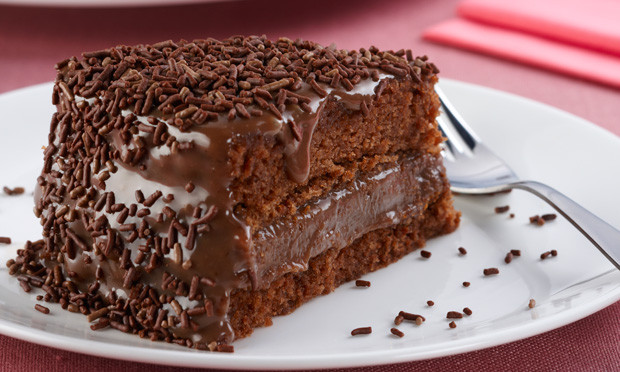

Pão Francês

O Pão Francês, também conhecido como marraqueta ou pan de batalla na Bolívia, ou pan francés no sul do Chile ou ainda pan batido, é um tipo de pão feito de farinha, sal, água e fermento.
Valor: R$ 0,30 a unidade
Queijo Mussarela

A mozarela, muçarela ou mussarela (em italiano, mozzarella) é uma variedade de queijo de massa filada com origem na comuna de Aversa, na província de Caserta, na região da Campânia, na Itália.
Valor: R$ 20/kg
Bolo com cobertura de chocolate
Bolo de chocolate é um bolo simples ou confeitado, que leva chocolate derretido ou em pó, ou ainda cacau em pó em sua confecção. Os ingredientes mais comuns são o ovo, o leite, a manteiga ou substituto, açúcar e fermento.
Fatia: R$ 6,00